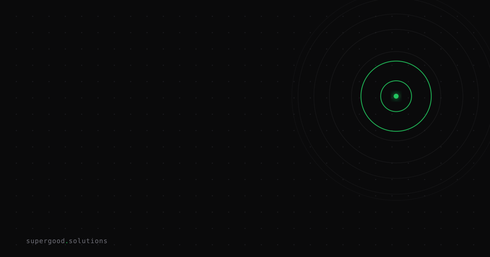

AI Productivity Numbers in Case Studies Don't Transfer to Your Team
TL;DR: Stampli's widely-shared case study says Codex cut launch production from 243 hours to 77 — a real 68% reduction. That number describes Stampli's pre-AI process, not yours, and buying a tool to chase someone else's delta is how teams overpay and underdeliver.
Key Insight
Vendor case studies report a ratio, and ratios hide the denominator. In OpenAI's own write-up, Stampli says its go-to-market team modeled the Deep Finance launch at 243 active role-hours without AI tools, then delivered it in about 77 hours with Codex and ChatGPT Work — a 3.16x speedup, achieved while "design resources and outside contractors" were already committed elsewhere. That 243-hour baseline is the whole story. It's an estimate of how long Stampli's specific team, with its specific tooling gaps and its specific resourcing crunch, would have taken to hand-produce a seven-part blog series, launch emails, a webinar deck, paid creative, a PR release, and a hero animation. If your content team isn't running that lean, doesn't have that gap, or has already automated half of that workflow, the 68% doesn't apply to you — you're starting from a different 243.
Why Teams Miss This
The mistake isn't believing the case study — the number is real and OpenAI's methodology is disclosed. The mistake is treating a single company's before/after delta as a transferable multiplier, then building a budget or a headcount decision on top of it. This is the same trap that shows up across enterprise AI adoption broadly: research on generative AI pilots has repeatedly found that a large majority of enterprise GenAI initiatives fail to show measurable P&L impact, not because the models don't work, but because teams skip the step of measuring their own starting point before rolling out a tool. A pilot ROI number is also frequently measured in a clean, hand-picked environment — a forgiving use case, curated data — that doesn't resemble the messy production reality it gets compared against later. Without your own baseline, you can't tell whether a case study's multiplier is a floor, a ceiling, or irrelevant to your workflow.
How to Actually Do It
- Baseline before you buy. Pick the specific workflow you're evaluating AI for (content production, support triage, code review — whatever the vendor's case study matches) and time your team's current process for 2-3 real instances. Get actual hours-per-task, not a guess from a planning meeting.
- Match the shape of the case study to your shape. Ask what made the vendor's baseline slow: understaffing, tool gaps, approval bottlenecks, manual handoffs? If your team's slowness comes from a different source (e.g., compliance review, not content drafting), a tool that speeds up drafting won't produce their delta.
- Run a scoped pilot on your own baseline. Deploy the tool on the same workflow you just timed, with the same team, for a fixed window. Compare your before/after hours directly — don't borrow the vendor's percentage.
- Price the decision off your delta, not theirs. If your pilot shows a 20% reduction instead of 68%, that's still real information — decide whether 20% clears your cost-benefit bar on its own, rather than anchoring to the number in the sales deck.
- Re-baseline periodically. As your team adopts more tooling, your "manual" baseline keeps shrinking, so last year's pilot multiplier won't repeat next year — measure again before the next purchase decision.
What We've Learned
Before your next AI tool evaluation, timebox two hours to measure your team's current hours-per-task on the exact workflow in question. That single number is worth more than any vendor's published percentage, because it's the only variable in the ROI equation you actually control.
Sources
- Case study with full methodology and hour figures: Stampli cuts launch hours by 68% using ChatGPT Work — OpenAI
- On pilot ROI not reflecting production reality: How to Measure AI ROI (And Why Most Vendors Don't) — Accubits
- On AI ROI requiring operating-model change, not just tool adoption: The Davos reality check on AI ROI — CIO
Have a specific workflow in mind?
Bring it to a Quick Scan — a live working session where we'll tell you honestly whether it should be an agent, a workflow, or left alone, before you spend a dollar building it. You get 3 prioritized recommendations on the call, a one-page summary after, and the $500 credited toward any engagement within 30 days.
Get new posts + practical agent-ops notes
One email when something new goes up. No nurture sequence, no spam — unsubscribe whenever you want.